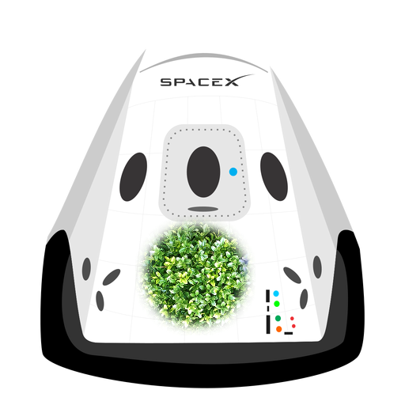

 HYPERBLOG
Tu Blog de Confianza
¡Aquí inicia la historia de un gran proyecto!
Y este será el párrafo de inicio dónde vamos a explicar las cosas increíbles que se pueden hacer con ramas

Los Blogs son la mejor manera de compartir información y tus ideas. Mucho más que ir a conferencias o salir en YouTube. Excepto si eres un Rockstar. Pero estadisticamente no lo eres...¡por ahora!
Suscribete y Dale Like